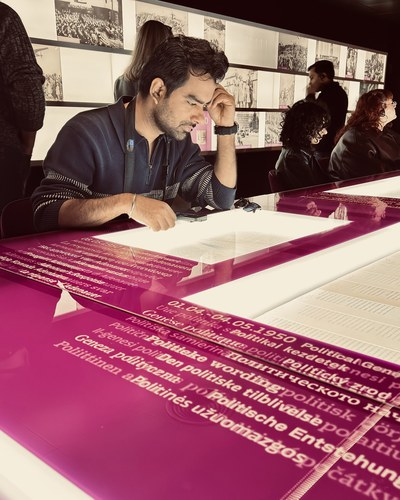

A Software Engineer specialising in building high-performance backend systems, microservices, and scalable enterprise solutions.
View Experience
Currently pursuing my M.Sc. in Computer Science at the University of Würzburg, Germany, while working as a Working Student at Magna International. With 4+ years in FinTech and enterprise software, I bring deep expertise across the full software lifecycle.
My core stack includes Java, Spring Boot, Microservices, PostgreSQL, Docker, and REST/SOAP APIs, along with emerging technologies like RAG and AI integration.
Working on automotive software integration, contributing to modern vehicle systems development and testing within the automotive industry.
Pursuing a Master's degree in Computer Science, focusing on advanced software engineering and AI technologies.
Developed FinTech solutions using Java, Spring Boot, and Microservices architecture. Built RESTful and SOAP APIs for insurance comparison platforms serving the MENA region.
Delivered custom software solutions for international clients, working on full-stack Java applications, API integrations, and database design.
Built enterprise-level Java applications using Spring, Hibernate, and JPA. Developed scalable backend systems and contributed to CI/CD pipeline optimisation.
Graduated with a strong foundation in software engineering, data structures, algorithms, and object-oriented programming.
Design and build robust RESTful and SOAP APIs with Java, Spring Boot, and microservices architecture. Focused on performance, security, and scalability.
Architect and optimise database solutions using PostgreSQL, MySQL, and Hibernate/JPA. Experience with vector databases (pgvector) for AI applications.
Build distributed microservices systems with Docker containerisation, CI/CD pipelines, and modern cloud-native architectures.
Integrate AI capabilities into enterprise applications using RAG (Retrieval-Augmented Generation), vector search with pgvector, and intelligent automation.